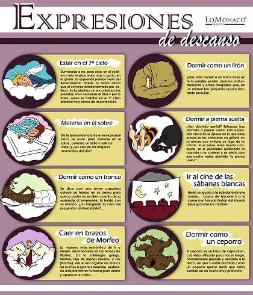

Expresiones sobre el sueño

-Estar en el 7º cielo: Durmiendo o no, estar en el séptimo cielo implica estar muy a gusto, en la gloria. La expresión parece provenir del Renacimiento, dónde se decía que el Universo estaba formado por esferas. En la séptima, se encontraban los planetas, muy cercana a Dios, por lo tanto quien se hallaba en el séptimo cielo, se encontraba cercano a la perfección.
-Meterse en el sobre: De la procedencia de esta expresión poco se sabe, pero meterse en el sobre, ponerse un sello y salir de viaje :)) es… ¡uno de los mejores momentos del día!
-Dormir como un tronco: Se dice que una joven casadera colocó un tronco en su cama, para que su padre, durante la noche no se percatara de su ausencia. Mientras tanto, ella ya había emprendido la huida con su amado. ¿Os imagináis la cara que puso el padre cuando descubrió el engaño?
-Caer en los brazos de Morfeo: Es de las expresiones más románticas que existen para referirse a ir a dormir, abandonarse en brazos de Morfeo. En la mitología griega, Morfeo era hijo de Hipnos (sueño) y Nix (noche), era el encargado de inducir los sueños a quienes dormían, pudiendo adoptar forma humana para entrar y aparecer en ellos.
-Dormir como un lirón:¿Has visto dormir a un lirón? Pues no te lo puedes perder, duerme profundamente y emite sonoros ronquidos, que en un animal tan pequeño resultan muy peculiares.
-Dormir a pierna suelta: ¿Has dormido genial? Entonces has dormido a pierna suelta. Esta expresión viene de la época en la que a los presos se les colocaba un grillete durante todo el día, y no se le soltaba nunca, incluso cuando iban a dormir. Esto evitaba una posible huída de la cárcel. Si el preso tenía buena conducta, se le premiaba quitándole la sujeción a la cadena, entonces se podía decir que esa noche había dormido a pierna suelta.
-Ir al cine de la sábanas blancas: Nada se iguala a la sabiduría de una madre, capaz de hacerte ir a la cama con toda la ilusión del mundo… ¡Qué grandes las madres!
-Dormir como un ceporro: El ceporro es un trozo de cepa vieja utilizada para hacer fuego, pesado y anclado a la tierra. Dormir como un ceporro significa entonces que estás sumido en un sueño muy profundo.